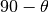
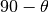
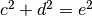
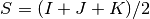
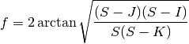
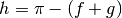
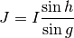
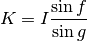
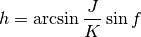
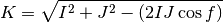

solutri – Triangles, solution of¶
Analysis¶
The separation into right-triangle and non-right-triangle is mostly a quirk. At best, it saves entering “90°” for one of the angles.
Note
Right Triangle Rules
In the case of a right triangle, there’s a known 90° angle. Given
one angle,  , the remaining angle is .
, the remaining angle is .
The lengths of the sides of a right triangle follow the Pythagorean Theorem: . Two sides determine the third.
Since one angle is 90°, two sides or angles define the remaining five values. There are 10 combinations of the five values; because the angles are so simple, the combinations boil down to three rules for pairs of sides and three rules for side and angle.
HamCalc does an “incremental” solution. Given two angles it will compute the third, making no effort to compute the sides.
In the general case, there are 15 combinations of values. The three angles are f, g and h, measured in radians. The three sides are I, J, and K.
Three sides, I, J, and K, known. We can compute the angles.


Similar formulae provide values for g and h.
Two angles known: f and g, f and h or g amd h. The third angle is  or some variant for the other two combinations.
Three angles known and one side give us the two other sides. f, g and h and a side (I, J or K):


Three similar pairs of equations deduce other pairs of sides from three angles and a side.
One angle and an adjacent and opposite sides known – for example, f, J and K – we can derive another angle.

Given two angles, we can deduce the missing angle. Now we’re working with three angles and two sides, so the third side is also available using rules above.
One angle and two adjacent sides known – for example, f, I and J – we can derive the missing side.

Implementation¶
This is a sophisticated Solver with six variables.
It can deal with just three angles or various combinations of sides and angles.
hamcalc.math.solutri – Triangles, solution of
Some test cases
>>> import hamcalc.math.solutri as solutri
>>> import math
>>> solutri.triangle( A_f=solutri.radians(60), S_i=3, A_g=solutri.radians(60) )
{'A_g': 1.0471975511965976, 'A_f': 1.0471975511965976, 'S_i': 3, 'S_k': 3.0000000000000004, 'S_j': 3.000000000000001, 'A_h': 1.047197551196598}
>>> solutri.triangle( A_f=solutri.radians(60), S_j=3, A_g=solutri.radians(60) )
{'A_g': 1.0471975511965976, 'A_f': 1.0471975511965976, 'S_i': 2.9999999999999996, 'S_k': 2.9999999999999996, 'S_j': 3, 'A_h': 1.047197551196598}
>>> solutri.triangle( A_f=solutri.radians(60), S_k=3, A_g=solutri.radians(60) )
{'A_g': 1.0471975511965976, 'A_f': 1.0471975511965976, 'S_i': 3.0000000000000004, 'S_k': 3, 'S_j': 3.0, 'A_h': 1.047197551196598}
>>> solutri.degrees( 1.0471975511965976 )
59.99999999999999
>>> solutri.triangle( A_f=solutri.radians(45), S_i=3, A_h=solutri.radians(90), S_k=3 )
{'A_g': 0.7853981633974483, 'A_f': 0.7853981633974483, 'S_i': 3, 'S_k': 3.0, 'S_j': 4.242640687119286, 'A_h': 1.5707963267948966}
>>> math.sqrt(2)*3
4.242640687119286
>>> solutri.degrees(0.7853981633974483)
45.0
>>> solutri.triangle( A_f=solutri.radians(30), A_h=solutri.radians(90), )
{'A_g': 1.0471975511965979, 'A_f': 0.5235987755982988, 'A_h': 1.5707963267948966}
- hamcalc.math.solutri.triangle(**kw)[source]¶
Solve the various elements of a Triangle.
Angles are A_f, A_g, A_h; Sides are S_i, S_j, S_k.
Further, A_f is opposite S_k, and adjacent to S_i and S_j.
Angles must be measured in radians.
Returns a dictionary with as many elements as can be determined. For example, if only two angles are supplied, then only the third angle can be computed.
Quirks¶
Having a separate right-triangle case is a quirk. The general case with one angle = 90° will produce the correct answers, also.
The use of similar single-letter variables (F, G, H, I, J, K) for angles and sides makes the code somewhat difficult to interpret.
The implementation of arcsin and arccos is peculiar. Rather than define proper functions, a GOSUB using three global variables is used.
Here’s the “definition”:
380 :REM'.....inverse sin and cos
390 ASN=ATN(X/SQR(-X*X+1)) :REM'arc sin
400 ACS=-ASN+PI/2 :REM'arc cos
410 RETURN
Here’s a “reference”. This line will put a value in X, then GOSUB 380 and find a value in ASN and ACS.
1080 IF D*E THEN C=SQR(E^2-D^2):X=D/E:GOSUB 380:T1=ASN:T2=PI/2-T1:GOTO 1460
The legacy application has a kind of cool character-mode graphics look-and-feel. The values are displayed adjacent to the relevant bits of the triangle.